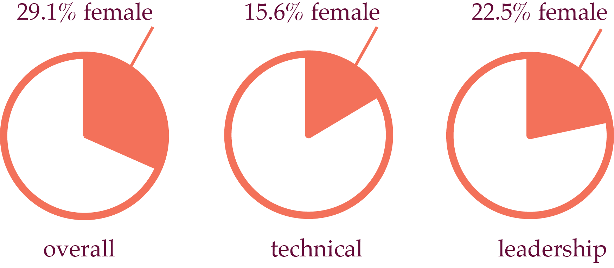

the story
we are on a mission to disrupt the current cultural narrative in tech.
we love the tech community. the lean approach that is user-driven and constantly learning. agents of disruption. We know our world needs disruption to innovate and grow.
we have a problem. Gender discrimination is prevalent in our collective culture, and particularly in the tech industry. We are committed to working for gender equality in the tech workplace.
women make up 59% of the US labor force and almost 51% of the entire US population but are underrepresented in the tech world.

the data reveals there is a problem in gender equality. there are many reasons why this data is such:

these are all true. yet the undercurrent that is the foundation of this problem is gender discrimination. Our work is to surface a conversation that has been deeply invisibilized to shift culture to one of inclusion and acceptance.
mission statement
we are on a mission to disrupting the current cultural narrative of gender discrimination in tech
we work to create a culture that is safe and comfortable for people of all genders. our purpose is to open up a conversation around gender with honesty and trust to shift culture to one of inclusion and acceptance.
founder
hadar cohen
hadar is ready to open up gender inequality conversation in the tech world. she is a community organizer and social change dreamer.
hadar studied electrical engineering at cooper union and worked at various startups in new york. she moved to the bay area to work on a farm and connect with nature.
her engineering degree taught her the process of applying complex theory to the real world. hadar integrates this method of creating at pivot to bloom, where theory and people come together.
her time on the farm inspired her to think about models of growth and sustainability. she learned that nature can be our source of wisdom to guide us in transforming culture.
email hadar@pivottobloom.com
follow her on medium